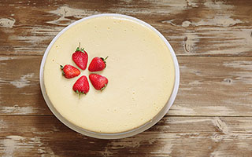
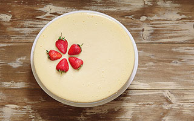

Welcome to Bethany's Pie Shop

For many years, Bethany has been baking the most delicious pies at her home. In 2013, we opened our first store in Brussels (Belgium) in a cosy little street near the Grand Market. People from all over the world fell in love with the soft cakes, heavenly cheese cakes, spicy apple pies... The store became a success in no time.
In 2015, no less than 100 pies were sold every day and Bethany's Pie Shop moved into a larger building. After receiving many requests, it became clear that our next step was making it possible to order pies from the comfort of your own home and from anywhere in the world. You are now looking at the result of this: our very own webstore, making it possible to order Bethany's delicious pies whenever you feel like it!
Find Your Perfect Pie
 
